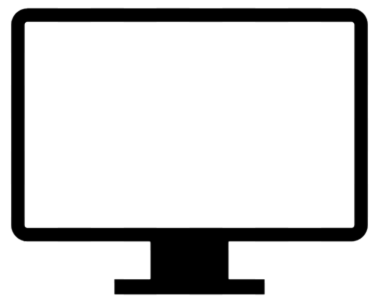

3 / 9
Imagens - Parte 1
Já que falamos de "fundo" de tela ou elementos (background),
vamos falar de imagens.
As imagens para uma boa apresentação devem responder diretamente ao tamanho da tela do
dispositivo que estamos utilizando.
Os dispositivos mais comuns são:
- Celulares em posição retrato ou paisagem ;
- Tablets em posição retrato ou paisagem ;
- Computadores, que usam normalmente a posição paisagem  .
Imagem não responsiva

Imagem responsiva
 Voltar ao início
Voltar ao início Anterior
Anterior